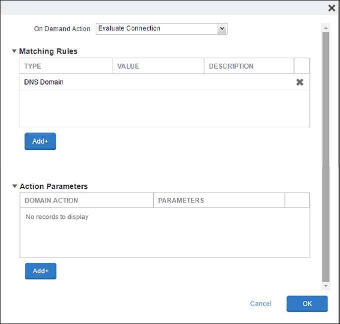
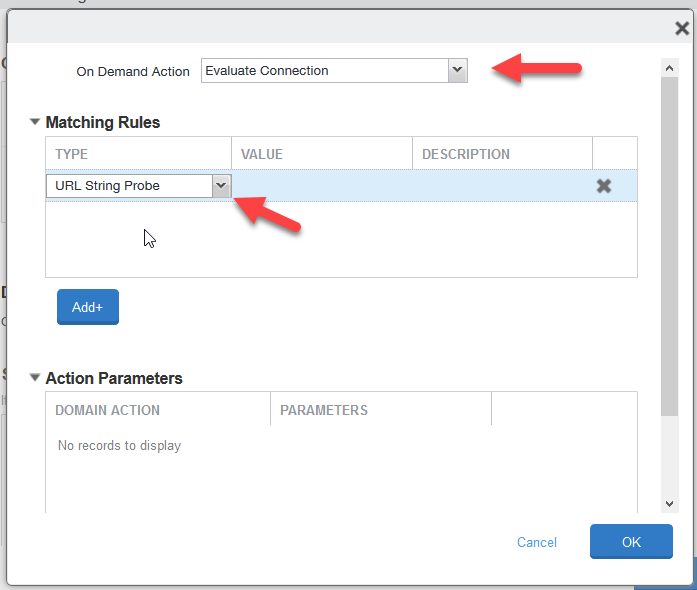

Configure the On-Demand VPN Profile
To configure an on-demand VPN profile:
In the MobileIron Core UI, go to Policies & Configs > Add New > VPN.

Enter these parameters:
Name: Enter your VPN connection profile name.
Connection Type:
IPSec (Cisco).Server: Enter the Netskope VPN server name from the VPN Configuration section in the Netskope UI (Settings > Security Cloud Platform > Netskope Client > MDM Distribution).
Proxy:
Automatic from ProxyProxy Server URL: Enter the PAC URL value from the VPN Configuration section in the Netskope UI.
Username:
$EMAIL$.User Authentication:
Certificate.Identity Certificate: Select the Certificate Name (defined in the Configuring Local Certification Enrollment section) from the dropdown list.
XAuth Enable: Enable the checkbox.
Password:
$EMAIL$.VPN On-Demand: Enable the checkbox. VPN starts whenever your users try to access the configured domain.
Scroll down to On-Demand Rules (iOS7 and later) and click Add+ to create the Domain Based Rules. These are the domains for which the on-demand VPN is triggered and must be configured for iOS7 and later devices.
 For On-Demand Action, select
Evaluate Connection.For matching rules, select URL String Probe and set the value from the MDM Distribution page in the Netskope UI.
 Click Add+ under the Action Parameters box.

Domain Action:
Connect if needed.Click Add+, and then add the SaaS domain names. Get the domain names for each SaaS app from the MDM Distribution page by clicking Download Domain List in the Create VPN Configuration section.

After adding the on-demand domains, add another entry for Required URL Probe with the value:
http://skopereachnetskope.goskope.com. Click OK.Set the Default Rule as Disconnect.

When finished, click Save.
Distribute to Devices
Select the following from the Policies & Configs page:
SCEP Profile Name
Netskope Root CA Public Key
Customer Intermediate CA Public Key
VPN Profile
Select Apply to Label in the More Actions dropdown list for devices. When the Apply to Label window opens, select iOS and click Apply.
To verify the VPN works, launch a managed app (like Box), and you should see the VPN icon at the top of the Status bar for iOS devices.